|
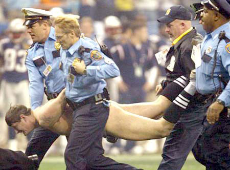 Mark Roberts"When you see me with my clothes off, you're gonna laugh." How does one judge the merits of a streak? What criteria has come to be the standards by which quality streaking is measured and quantified by a global population? Is it necessary to disrobe and run across the field at every match -- or is it more important to save your "best" gimmicks for a time when your target stadium is packed with 53,000 people, tight security, and dozens of television cameras? And what if you hate sports? Might there be somewhere more meaningful to conduct a streak?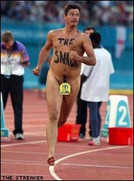 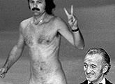Los Angeles sex shop owner Robert Opel streaked all the way from one side of the stage to the other during the 1974 Academy Awards, flashing the peace sign behind David Niven. "The only laugh that man will ever get in his life is by stripping and showing his shortcomings," Niven improvised unsuccessfully. Opel was later murdered during a robbery at his place of business, making him but a footnote. More disgusting than the sight of a naked man is a naked man with corporate advertising painted across his stomach, such as the two Vodafone-sponsored streakers who disrupted a rugby match between New Zealand and Australia in 2002. Vodafone was forced to apologize after it "unw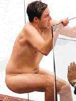ittingly" sanctioned the act. Other streakers are not so lucky. When Tim Hurlbut, 21, decided to streak at a Canadian Calgary Flames hockey game, he slipped while climbing over the slick glass railing and fell flat on his neck, knocking himself unconscious on the ice. While being carried off the rink in a stretcher and neck brace, he flashed the double-Metallica sign to the crowd, to boos and jeers. The Hockey News referred to Tim as a "naked buffoon". It's a common sight: the wobbly TV camera pans along the green grass of a soccer field, capturing a lone naked man waving his arms excitedly and running from the 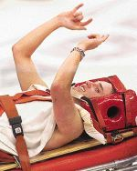constables on patrol. By far, the most prolific serial streaker (and the world's most famous naked man) is record-breaking Mark Roberts, (b. December 12, 1964) who has an impressive collection of three hundred full on freak streaks to his name. His most recent accomplishment was on February 1, 2004: a mad dash across the field at Half Time during Super Bowl XXXVII in Houston. He cleverly approached the green while wearing a velcro referee's uniform which aroused no suspicions. Then he tore it off at the 30-yard line and began dancing. This delayed the second-half kickoff in front of a worldwide audience in excess of 800 million people, likely setting a new world record. Roberts was immediately tackled by Patriots linebacker Matt Chatham before being carried away by security, and sadly his efforts were overshadowed by Janet Jackson's floppy air-bag tittie scandal. He was charged with criminal trespassing and public intoxication. 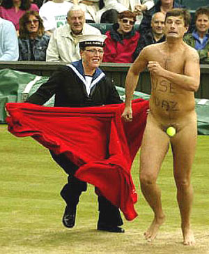Roberts, an unemployed father of three, started streaking in 1993 at a Rugby Sevens tournament in Hong Kong. Under the influence of alcohol and peer pressure, he felt the atmosphere was more like a carnival than a sporting event. He made his way down to the front row of seats, tore off his clothes, and ran onto the pitch. Players stopped in their tracks and stared, allowing Roberts to grab the ball and continue running. The whole stadium rose as one, hands in the air, cheering and clapping. The further he ran down the field, the louder the stadium roared with appreciation. When he got between the goal posts, he felt the full force of everyone cheering at once. "It was like a wave of heat hitting me. Even the players and referees were laughing. I put my hand in the air and set off to do another length of the pitch on my way back to my seat, feeling like the King of England. I was told by the policeman that I was going to be ejected from the stadium and, as he walked me to one of the tunnels leading outside, the whole stadium started to chant LEAVE HIM ALONE, LEAVE HIM ALONE. It is impossible to describe the feelings that were going through me during all of this. I have never known anything like it. As I looked up, 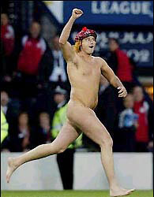I saw a guy holding two jugs of Carlsberg who then proceeded to pour them over myself and the copper. It was brilliant! Even the copper couldn't help but laugh. He then walked me to the gate and told me that if he saw me back inside, he would have to arrest me. As soon as I left one gate, I walked back in through another. Nothing was going to spoil this day, I was going back to the carnival. People kept shaking my hand, pouring beer over my head, girls were kissing me, it could not have been better." 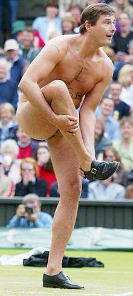And then Mark Roberts did it again, to twice the applause and twice the enthusiasm. Once again the crowd booed as the stewards marched him off the green, but it was only the beginning of a lifelong streaking career. His antics have disrupted soccer, tennis and rugby matches, golf tournaments, casinos and television shows, local weathermen's broadcasts, the Mister Universe competition and the Miss World pageant. I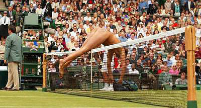n 2002, he pulled off the three biggest streaks of his life back to back: the men's final at Wimbledon, the Champions League soccer final, and the Commonwealth Games. There, he performed naked a galloping 100-meter dash, prompting a Manchester court to charge him with being a public nuisance. His attorney's defense planned to call each and every one of the 40,000 people in attendance that day, to see if anyone honestly cared one way or another. After viewing an amateur video of the incident, prosecution counsel Jamie Hamilton said he had difficulty in proving the charge because everyone in the crowd was cheering and clapping. Roberts was found not guilty. He streaked a match featuring Anna Kournikova, with the phrase "only the balls bounce" markered across his chest -- a reference to a brassiere advertisement Anna was doing at the time. She hid her face in shame under a towel. Other banner statements in his arsenal have come to include "The Snack," "Super Bowel," "The 19th Hole" (with an arrow pointing to his backside at golf tournaments) and "General Erection". He frequently makes use of a specially prepared outfit which can tear apart, similar to those used by strippers: "The clothes come off in a split second and I'm off. It's called professionalism."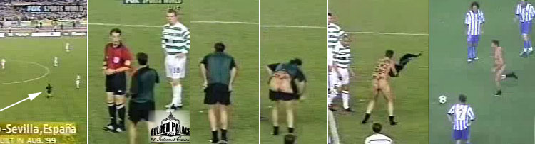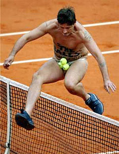Roberts' body has weathered numerous cuts, scrapes and bruises, fifty stitches, a broken toe, two broken ribs, a broken ankle and a broken wrist. There are numerous warrants out for Roberts' arrest: since he's unemployed, he hasn't paid his ongoing fines and sanctions. He's banned from every soccer game in England and Wales. He has restrictions to stay under house arrest every time an English soccer team plays abroad. He's been banned from numerous casinos, and his passport forbids him from ever returning to Hong Kong. Mark's 69-year-old mother Pat Roberts muses about her son's hobby: "We're out for his birthday last year, and the next thing I know he's standing there stark naked. I'm with friends and I'm like, Mark, put your clothes on. He was a normal kid but all of a sudden he got a little crazy. I think I dropped him on his head or something." Roberts went before a Houston judge to answer the criminal trespassing charges for his 2004 Super Bowl incident. "I just like to entertain people at the end of the day," he said. "There were 70,000 people at Reliant Stadium -- I think everyone was entertained by my performance. I like to make people laugh and I think I did exactly that." He faces 180 days in jail and a $2,000 fine. In the meanwhile, he continues to dream about someday making it past security guards at the Olympic games. He plans to wear a cape and a wig, and call himself Captain Cock. Marvel Comics has approached him to collaborate on a streaking superhero graphic novel. |